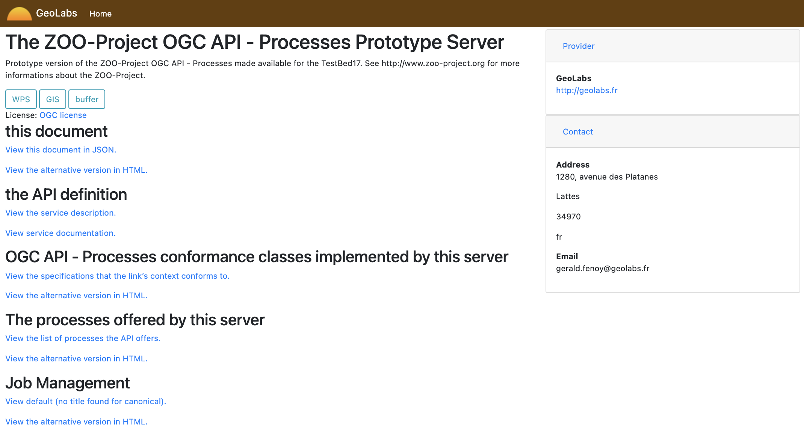
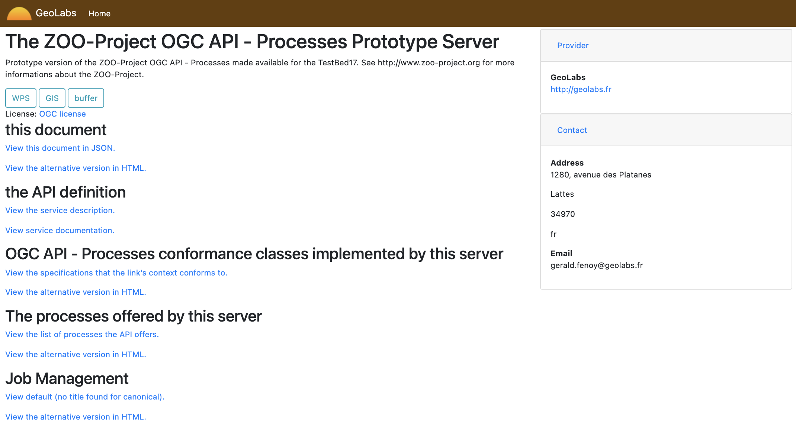

http://zoo-project.org
http://zoo-project.org

ZOO-Project is a Web Processing Service (WPS) implementation written in C and C++. It is an open source platform, released under MIT/X11 Licence, which implements:
ZOO-Project provides a developer-friendly framework for creating and chaining services (processes). Its main goal is to provide generic and standard-compliant methods for using existing open source librairies.
ZOO idea at FOSS4G 2008
ZOO 1st talk at FOSS4G 2009
ZOO-Project 1.0 release at FOSS4G 2010
ZOO-Project 1.1 release at FOSS4G 2011
ZOO-Project 1.2 enters OSGeo incubation in 2012
ZOO-Project 1.3 release at FOSS4G 2013
ZOO-Project 1.4 release at FOSS4G 2014
ZOO-Project 1.5 release in July 2015
ZOO-Project 1.6.0 has been released early 2017
ZOO-Project 1.7.0 has been released June 2019
ZOO-Project 1.8.0 has been released December 2020
ZOO-Project 1.9.0 has been released February 2022
ZOO-Project become an OGC reference implementation February 2023
ZOO-Project graduated an OSGeo project in June 2023 (Thanks to our mentors: Frank Warmerdam, Dimitris Kotzinos, Tom Kralidis)
ZOO-Project 2.0.0 has been released
March 2024 
| Prénom | Nom | Organisation | Pays |
|---|---|---|---|
| Nicolas | BOZON | Klokan Technologies GmbH | |
| Fabrice | BRITO | Terradue | |
| Gérald | FENOY | GeoLabs | |
| Jeff | McKENNA | Gateway Geomatics | |
| Venkatesh | RAGHAVAN | Osaka Metropolitan University | |
| Rajat | SHINDE | Huntsville University | |
| Angelos | TZOTSOS | National Technical University of Athens |
ZOO-Kernel implements the WPS 1.0.0 and 2.0.0 specifications of the Open Geospatial Consortium and runs on GNU/Linux, MacOS X and Windows™ platforms.
ZOO-Kernel (version 1.9.0 and upper) implements the OGC API - Processes - Part 1: Core, OGC API - Processes - Part 2: Deploy, Replace, Undeploy, and OGC API - Processes - Part 3: Workflows
ZOO-Kernel is able to execute Services written in various programming languages: C/C++, Fortran, Java, PHP, Perl, Ruby, Python, C#, JavaScript and R.
ZOO-Kernel is able to interract with GIS engines such as OTB and SAGA-GIS. So no more coding is needed!
Run your existing code through WPS compliant web services.
MapServer support: automatic result publication as : WMS/WFS/WCS


GetStatus also available as a service for WPS 1.0.0!
This work was supported by public funds received in the framework of GEOSUD, a project (ANR-10-EQPX-20) of the program "Investissements d'Avenir" managed by the French National Research Agency

The schema has been provided by IRD, IRSTEA, Geolabs, Noveltis.
The ZOO-Kernel supports remote execution of Services! (relying on WPS 2.0.0)

The ZOO-Project was used in the PHIDIAS-HPC project to provide a WPS compliant platform for the execution of remote sensing algorithms on HPC encapsulated in Singularity containers.
During the OGC Testbed 19 HPGC activity, the ZOO-Project HPC support has been updated to support the deployment of Singularity containers on HPC relying on the OGC - API - Processes - Part 2: Deploy, Replace, Undeploy and run the included processes using the OGC API - Processes - Part 1: Core.
No need to modify your service code to access them using REST
 

OGC API - Processes - Part 1: Core define the OpenAPI and html conformance classes that let users interact through a UI, swagger-ui or the basic HTML UI using Cheetah Python templating system
During the 2022 OGC OSGeo ASF Code Sprint, we worked on an updated version of the internal MapServer support used for automatic publication of web services based on the result of a service execution.

The ZOO-Project got a grant for testing the Microsoft Azure platform. It helps the community testing the deployment of the ZOO-Project on Azure Kubernetes Cluster.
Starting in 2015, the ZOO-Project is able to attract students or other contributors, since it is possible now in GSoC, to work on the ZOO-Project, adding new features every year.
All rights reserved © 2023, Telespazio
The ZOO-Project is part of the EOEPCA project, which is an European Space Agency (ESA) project aiming to provide a generic platform for Earth Observation data processing in the cloud.
All rights reserved © 2023, Telespazio
All rights reserved © 2023, Terradue
During the Testbed 19 GeoDataCube activity, the ZOO-Project was updated to support one or more services for filterIn and filterOut. These services are invoked before and after the request is handled by the ZOO-Kernel. It eases integration with any other software and combining capabilities.
We started with a prototype implementation of OpenEO graphs publication for OGC API - Processes - Part 1: Core using the Part 2 draft specification.
The ZOO-Project and eoAPI can work together to provide a single platform where you can mix the data with the processing or vice-versa.
During the Testbed 19 ML-Transfer activity, the ZOO-Project was coupled with the Triton Inference Server and NETRON. The Open Neral Network eXchange (ONNX) format was used to share models.
In the Climate and Disaster Resilience Pilot 2024 activity, the ZOO-Project-DRU is used to deploy inference on-demand using the OGC API - Processes - Part 2: Deploy, Replace, Undeploy draft specification and the CWL conformance class.
In the first phase of the OGC - Open Science Persistent Demonstrator (OSPD) activity the ZOO-Project demonstrated that chain of processes can be defined with a single execute request.
The Galaxy Project is used as an OGC API - Processes - Part 1: Core client to graphically build workflows that may interact with different Server Instances. CWL plays a key role here in making workflows FAIR through osf.io.

All rights reserved © 2024, CRIM
Releasing the OGC API - Processes - Part 2: Deploy, Replace, Undeploy
OGC API - Processes: Part 4: Job Management tries to align OGC API - Processes with OpenEO.
Integrate support for provenance in the upcoming GeoDataCube API through the OGC API - Processes by using CWLProv to capture a workflow run as a Research Object using linked data.
Implement support for Argo workflow execution through CWL and the OGC API - Processes - Part 2: Deploy, Replace, Undeploy draft specification.
Use Toil to Execute remote tasks on HPC using CWL and the OGC API - Processes - Part 2: Deploy, Replace, Undeploy draft specification.
ZOO-Services is a growing collection of ready to use services built on top of reliable open source libraries such as GDAL, CGAL and more.
A ZOO-Service is a couple gathering a source code to execute and a ZCFG or YAML file which describes the Service and the needed input/output.
Since the 1.7.0 version, the metadata informations of a ZOO-Services can also be stored in a structured PostgreSQL database.
Turn your code into a standard service easily.
def HelloPy(conf,inputs,outputs):
outputs["Res"]["value"]="Hello "+inputs["a"]["value"]+" from Python"
return zoo.SERVICE_SUCCEEDED

700+ ready to use WPS


ZOO-API is a server side Javascript library designed to simplify the creation and chaining of existing WPS processes.
ZOO.Process server side classes help the developper to create new services by invoking other WPS processes through HTTP.
ZOO-API only support WPS 1.0.0.
Call and chain your WPS Services the simple way.


ZOO-Client is a client-side JavaScript API which provides simple methods for interacting with WPS 1.0.0 and 2.0.0 server from web applications.
It is helpful for sending requests to any WPS compliant server and to parse the output responses using simple JavaScript.
ZOO-Client relies on modern JavaScript libraries and can be seamlessly integrated in new or existing web applications.
ZOO-Client uses logic-less Mustache templates for creating well-formed WPS requests


GitHub Action to build and publish latest ZOO-Project Docker image and, run tests validating requests and responses for both WPS versions (home made). Use the official OGC ETS from GitHub Action.

GIS in the browser and Web GIS generator
http://mapmint.com
MapMint4ME Android application
fr.geolabs.dev.mapmint4me